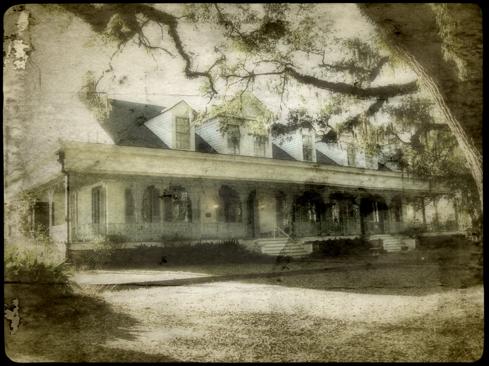
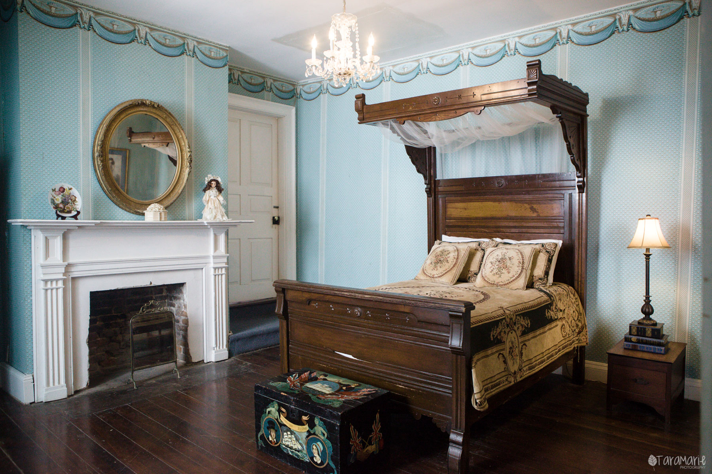

The Myrtles' Plantation, a classic Southern mansion--now both a must-see tourist attraction and a four-star bed & breakfast--is located in St. Francisville, Louisiana, within driving distance to the famous city of New Orleans and Baton Rouge. While it is often times praised for its beautiful landscaping that stretches 9.9 acres (which includes the century-old willow trees) and its architecture that is truly reflective of the Antebellum period, the Myrtles' Plantation is also equipped with its own sinister ghost stories and a legendary history. Featured in Unsolved Mysteries and Ghost Hunters, year after year, the Plantation attracts an endless stream of visitors that come in search for a good scare.
The history of the plantation, is surely, one filled with death, tragedy, and despair. Built over a Native American burial ground by General David Bradford in 1796, the Myrtles Plantation, originally known as the Laurel Grove, passed through many families.
Legend of the Woodruff Family
In 1817, the plantation purchased by Clark Woodruff and his wife,
Sara Mathilda Woodruff. According to the legend, Mr. Woodruff, a
promiscuous man, had an affair with the one of the house servants
named Chloe, who gave into his demands knowing that she would end up
working in the fields if she did not. Eventually, he grew tired of
Chloe and forced himself upon another woman. Feared the worst, she
began to eavesdrop on the family's private conversations, dreading the
mention of her name. However, she was soon caught, and as a punishment,
the Judge ordered that one of her ears be cut off. Since then, she
always wore a green turban that hid the ugly scar the knife left behind.
What happened next is still unclear. Some claim that Chloe began to
slowly poison the Woodruff family so that the family would simply get
sick and she would be able to nurse them back to health and be safe
from ever being sent to the fields. Though others say that her motives
were solely for one reason: revenge. For the Woodruff's oldest
daughter's birthday, Chloe baked a cake with a handful of very
poisonous oleander flowers. Both Sara and her daughters had a slice of
cake and died within a matter of hours, but Clark Woodruff was spared.
Frightened that they would be blamed for the deaths, the other slaves
dragged Chloe into the courtyard and hanged her on a tree. Her body was
weighed down with rocks and tossed into a nearby river.
Ruffin Grey stirling and the "Myrtles"
In 1834, Laurel Grove was purchased by Ruffin Grey Stirling who was
part of a wealthy family who owned several plantations in the South.
He remodeled and renovated the home, which nearly doubled the size,
and it was renamed “the Myrtles." Four years after the completion of
the project, Stirling died on July 17, 1854 of tuberculosis. He left
his wealth and property to the care of his wife, Mary Cobb. Furthermore,
the family was often visited by tragedy. Of nine children, only four
of them lived to be old enough to marry. The oldest son, Lewis,
died the same year as his father, and the husband of his daughter
was murdered on the front porch of the house after the Civil War. The
war itself wreaked havoc on the Myrtles Plantation and on the Stirling
family. Many of the family's personal belongings were looted and
destroyed by Union soldiers and the wealth that they had
accumulated was ultimately in worthless Confederate currency. To make
matters worse, Mary Cobb had invested heavily in sugar plantations
that had been ravaged by the war, so as a result, she eventually lost
all of her property. She died on August, 1880 and is buried next to
her husband in the family plot at Grace Church in St. Francisville.
The Murder of William Winter
On December 5, 1865, Mary Cobb hired William Winter, her daughter's
husband, to act as her attorney who would help her manage the
plantation lands. As part of the deal, she gave Sarah and William the
Myrtles as their home. Tragedy struck in 1871 when William Winter was
shot on his front porch and according to legend, staggered or crawled
up the stairs, but collapsed dead on the 17th step.
The Myrtles' Plantation hosts much paranormal activity and ghostly phenomena
as it is home to over 12 different ghosts, each with its own haunting past.
Additionally, it is rumored that it has been the scene of ten murders.
Since Chloe's death, she has been spotted several times in the mansion,
though one of her most famous encounter was captured on camera. In the famous
black and white photograph, some say you can see the shape of Chloe hiding
around the side of the house--almost out of sight--as if she does not want
to be caught. Additionally, she is often seen during the nighttime, wandering
the grounds in her green turban while you can hear the cries of little children.
Guests have also reported being woken up in the middle of the night to the
frightening sight of Chloe, staring at them from the side of the bed.
Yet, Chloe is, of course, not the only ghost reported to be haunting the
Myrtles' Plantation. The house is reportedly built over an Indian burial ground,
so there is, allegedly, a ghost of a young Native American woman. There are
also ghostly sightings of William Winter, and there is famous mirror inside
the plantation that's rumored to hold the spirits of Sara and her two murdered
children. Often times people will see them reflecting back or will find
handprints on the glass.
The Myrtles' Plantation is also a cozy bed-&-breakfast that offers rooms at affordable rates. There are 12 distinctively different accommodations to meet the needs of any guest. Likewise, each stay includes a complimentary Daily Mystery Tour and Breakfast (Evening Mystery Tours are not complimentary). For more information, including the amenities and prices of each room, visit this webpage.
We will definitely be returning to stay in another section of the house where another visitor got a picture of an apparition on the well known staircase. Clearly, the most haunted place in America! -Faith Smith
Stayed for the night, and during our visit my wife and I were had a bone-chilling experience. As we were touring the house at night (which by the way, HUGE kudos to our amazing tour guide, Sarah), we entered the room containing the 'haunted mirror'. Well...it was indeed, haunted. As we looked at our reflections in the mirror, we were absolutely horrified to see the ghosts of Sara Woodruff and her daughters. Wish we were able to capture them on the camera, but I guess you'll have to visit and experience it for yourself! 10/10 I would highly recommend! -Doug Campbell
If you are not looking to stay overnight at this haunted hotel, here are other nearby places to spend the night:
Below are the top three places to visit in St. Francisville (besides the Myrtles' Plantation, of course). For more attractions in the city, visit the Trip Advisor Website.
Are you ready to visit one of "America's Most Haunted Homes"? Contact the Panda Travel Agency at 555-905-1982 or email us!